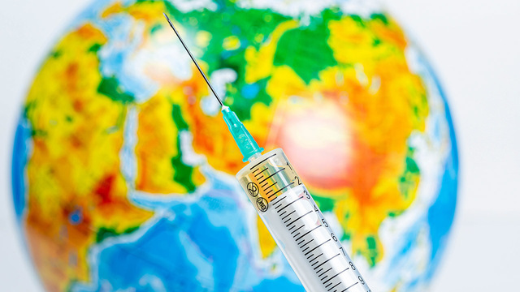
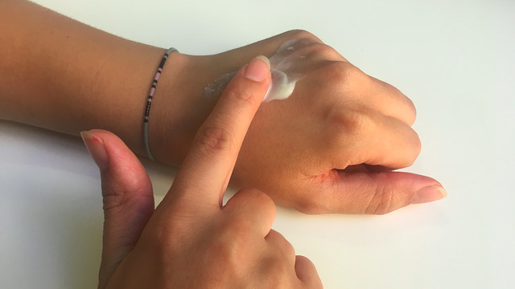

ЗДОРОВЬЕ
Почему зимой мы болеем чаще
Хотя зимой мы болеем чаще, нас «заражают»
не сквозняки и не холод. Простуду, как и грипп, вызывают вирусы.
Обсудим некоторые научные предположения, почему в холодное время года мы хуже противостоим инфекции.

ЭПИДЕМИЯ
Что надо знать про вакцинацию от гриппа в эпоху COVID-19
15.02.2022

ЗДОРОВЬЕ
Зуд и красные пятна: как отличить крапивницу от псориаза?
15.02.2022
ГИПОТЕЗЫ И ОТКРЫТИЯ
Ученые выяснили, что мешает детям научиться читать
13.02.2022